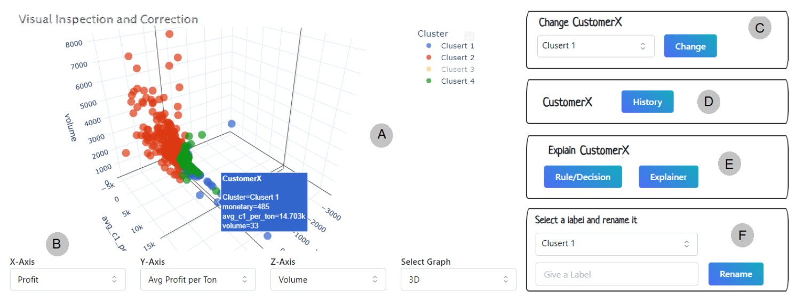

Make results interpretable
Help users see what distinguishes customer groups and how the characteristics connect to purchasing behavior.
Research · Interactive machine learning · B2B sales
Designing interactive machine learning experiences that help sales professionals understand customer segments, bring their domain knowledge into the analysis, and make informed business decisions.

01 / The challenge
Sales professionals know their customers, histories, and market conditions. A model may reveal patterns they have not seen, but users still need to understand those groupings and decide how they apply to the business.
The design challenge: connect machine-generated patterns with the contextual knowledge people already use to make decisions.
02 / Start with people
I spoke with experienced sales managers about their current analysis practices, expectations, and pain points. The goal was to understand how customer information becomes a business judgment before deciding what an automated tool should do.
Segmentation is not just a statistical exercise. People interpret customer groups through experience, relationships, and business context.
03 / Interaction principles
Help users see what distinguishes customer groups and how the characteristics connect to purchasing behavior.
Let sales professionals examine, question, and engage with classifications rather than passively accept them.
Recognize that important customer context is not always captured in transactional data or a model.
04 / From model to experience
I built a prototype using a realistic customer dataset from a global manufacturing company. Clustering techniques were used to identify groups based on purchasing behavior. The interface connected the analysis to interactive visual representations so business users could explore customer groups, inspect segment characteristics, and engage with model-generated classifications.
05 / Learn from interaction
Through interviews and user feedback, I explored how sales professionals interpreted customer segments, where they encountered friction, and what they expected from an interactive analytics tool.
The work challenged an early assumption: identifying meaningful groups is not, on its own, enough to support business decisions. Users wanted to examine the results, bring their customer knowledge to the process, and have meaningful control over segmentation.
Key takeaway
Machine learning creates value when people can understand, contextualize, and meaningfully interact with its outputs—not only when a model can generate them.
06 / Beyond the prototype
The prototype work led to a broader question about analytics and AI adoption. I surveyed business professionals and followed up with interviews to understand how people use data, their experiences with analytical tools, and what gets in the way of adopting AI-based analytics.
Complex statistical models and analytical tools can be difficult to understand without specialized expertise.
Some professionals perform their own analysis with familiar tools or delegate analytical work to others.
Adoption depends on how tools fit into existing work, decisions, and professional knowledge—not capability alone.
07 / Research outcomes
Investigating the challenges of introducing interactive customer segmentation into real-world sales operations.
Examining usability and interaction challenges in customer segmentation tools for business professionals.
Understanding why decision-makers continue to rely on traditional analytical practices despite new AI tools.
Together, these studies point toward analytics systems that account for users' expertise, expectations, and decision-making practices—and treat human judgment as part of the analytical process.